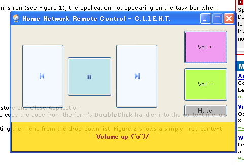

Purpose
Writen in C#, around 2h of work, since I didn't want to stand anymore to pause or push next tune on the pc I use for listening to music. Indeed, that pc is connected to a 2.1 sound which is ridiculously good for the price, and anyway lightyears away from my laptop speakers. And the here above mentionned pc is at the other side of the room. Waiting for I implement the
ardBlueControl, I made a quick client/server app in C# that uses the
WM_APPCOMMAND (server side) to pilot the media player . It's quite straightforward program (I said 2h), but free for use. Enjoy, just tell me if you found it useful.

Download
All the latest code under subversion at code.Google
Binary %20 source no-GPL at all, just enjoy :
HomeNetworkRemoteControl.zip